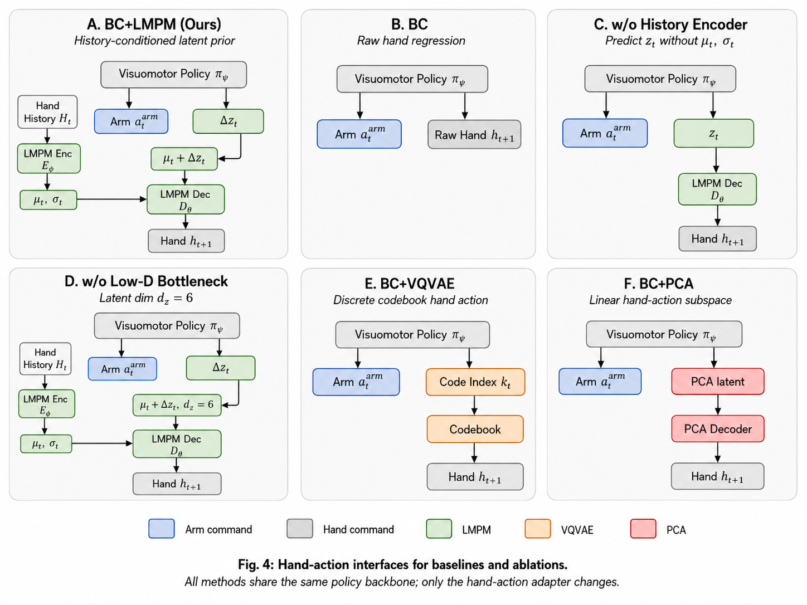
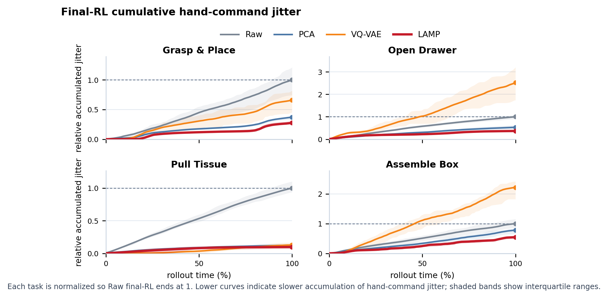
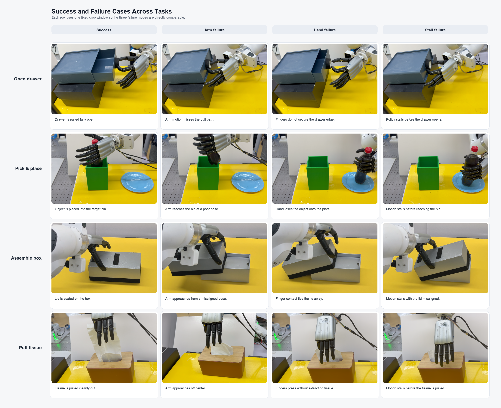

Learn the latent motion prior
A history-conditioned encoder defines a local latent prior over hand motion, and a frozen decoder maps latent offsets back to executable hand targets.
Real-world dexterous manipulation
Latent Motion Prior-Guided Real-World Learning for Dexterous Hand Manipulation
A compact, history-conditioned hand-action interface learned from demonstrations, then reused for imitation and online residual RL on real hardware.
Problem
Raw high-DoF hand commands create many ways to slip, stall, or break contact before reward appears. LAMP keeps the arm command space direct, but routes the hand through a learned motion prior so residual updates stay close to demonstrated, decodable motion.
Method
A history-conditioned encoder defines a local latent prior over hand motion, and a frozen decoder maps latent offsets back to executable hand targets.
The policy predicts native arm actions plus compact hand latents, reducing the burden of raw joint regression while preserving dexterous coordination.
Residuals refine arm motion directly and hand motion through the latent decoder, keeping exploration near smooth, contact-consistent actions.

Paper Results
| Variant | Grasp & Place | Open Drawer | Pull Tissue | Assemble Box |
|---|---|---|---|---|
| Full LAMP | 75% IL100% RL | 50% IL100% RL | 45% IL95% RL | 55% IL100% RL |
| w/o low-dimensional bottleneck | 40% IL35% RL | 65% IL85% RL | 15% IL80% RL | 5% IL20% RL |
| w/o history-conditioned encoder | 70% IL95% RL | 35% IL90% RL | 40% IL60% RL | 15% IL50% RL |
| Raw BC (no prior) | 0% IL15% RL | 20% IL0% RL | 0% IL0% RL | 0% IL0% RL |
Rollout Matrix
Paper Evidence
Smooth residuals
The smoothness analysis helps interpret why LAMP rollouts keep grasp contact during online updates: residuals remain decodable through the learned hand-motion manifold.


Failure modes
The rollout matrix includes the same six experiment groups per task, so the qualitative videos can be read alongside the paper's failure analysis instead of as isolated demo clips.
Citation
@misc{lamp2026,
title = {LAMP: Latent Motion Prior-Guided Real-World Learning for Dexterous Hand Manipulation},
author = {Anonymous Authors},
year = {2026}
}